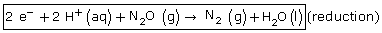
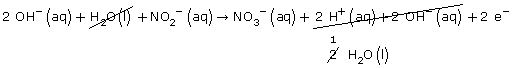
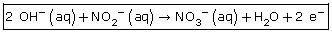
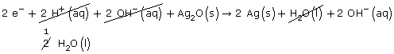
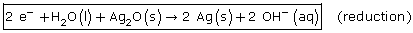
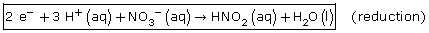
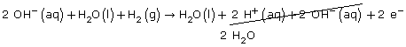
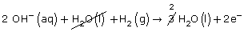
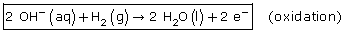

Module 3—Electrochemical Reactions
 Read
Read
In Lesson 1 you learned that balancing chemical reactions involves ensuring that charge is balanced. When writing half-reactions, you will have checked that the net charge on each side of the equation was equal. In more complex half-reactions, balancing charge requires more care.
Watch me: Procedure for Balancing Half-Reactions
Now read the section “Writing Complex Half-Reaction Equations” and work through the “Sample problems” and “Communication examples” on pages 564–567 of the textbook. You may wish to place a copy of “Summary” on page 567 in your course folder to review later in this module.
 Self-Check
Self-Check
SC 1. Complete “Practice” question 12 on page 566 of the textbook.
Self-Check
Answers
Contact your teacher if your answers vary significantly from the answers provided here.
SC 1.
Practice 12.
a.
Step 1: N2O(g) → N2(g)
Step 2: N2O(g) → N2(g) Nitrogen is balanced
Step 3: N2O(g) → N2(g) + H2O(l)
Step 4: 2 H+(aq) + N2O(g) → N2(g) + H2O(l)
Step 5: 2+ 0 = 0 +0
2+ = 0
Add e– to the most positive side.

b.
Step 1 & 2: NO2-(aq) → NO3-(aq)
Step 3: H2O(l) + NO2–(aq) → NO3–(aq)
Step 4: H2O(l) + NO2–(aq) → NO3–(aq) + 2 H+(aq)
0 -1 = -1 +2
-1 = +1
Step 5: H2O(l) + NO2–(aq) → NO3–(aq) + 2 H+(aq) + 2 e–
Step 6:
 (oxidation)
c.
Step 1: Ag2O(s) → Ag(s)
Step 2: Ag2O(s) → 2 Ag(s)
Step 3: Ag2O(s) → 2 Ag(s) + H2O(l)
Step 4: 2 H+(aq) + Ag2O(s) → 2 Ag(s) + H2O(l)
Step 5: 2e– + 2 H+(aq) + Ag2O(s) → 2 Ag(s) + H2O(l)
Step 6:
Step 7: 
d.
Step 1 & 2: NO3–(g) → HNO2(aq)
Step 3: NO3–(g) → HNO2(aq) + H2O(l)
Step 4: 3 H+(aq) + NO3–(g) → HNO2(aq) + H2O(l)
Step 5: 
e.
Step 1 & 2: H2(g) → H2O(l)
Step 3: H2O(l) + H2(g) → H2O(l)
Step 4: H2O(l) + H2(g) → H2O(l) + 2 H+(aq)
Step 5: H2O(l) + H2(g) → H2O(l) + 2 H+(aq) + 2 e–
Step 6 & 7: 
Simplifies:

Read
When selecting materials for use in devices, it is useful to know what substances are present in the environment in which the device will be used. For example, if design manufacturers are considering using metals in machinery that will be exposed to water and oxygen, they need to know that those conditions may promote corrosion of the metal.
You will use
the list of half-reactions in your Chemistry Data Booklet to help
predict spontaneous reactions.
Watch
me: Predicting
Redox
Reactions in Solutions EX
1
Watch me: Predicting Redox Reactions in
Solutions EX 2
Read page 575 to the end of “Communication example 1” on page 577 of the textbook. A summary of the method described in this section appears on page 578.
Self-Check
SC 2. Complete “Practice” question 26 on page 579 of the textbook.